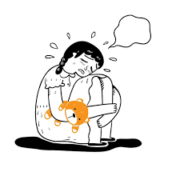

NEUROBIENESTAR:Tu mente tambien merece cuidados

English Que es neurobienestar? Neurobienestar es un proyecto enfocado en la salud mental de los adolescentes, buscando comprender y atender los principales factores de riesgoque pueden afectar su bienestar psicológico. Se centra especialmente en los trastornos mentales más comunes en esta etapa de la vida, como la depresión, que hoy en día representa una de las problemáticas más frecuentes y preocupantes en los jóvenes.
Sintomas y causas de la depresion
•Sintomas emocionales (tristeza, ansiedad, falta de motivacion, etc).
•Sintomas fisicos (cansancio, insomnio, cambios de apetito, etc).
•Causas comunes en adolescentes (presion escolar, redes sociales, bullying, problemas familiares, cambios hormonales, etc)